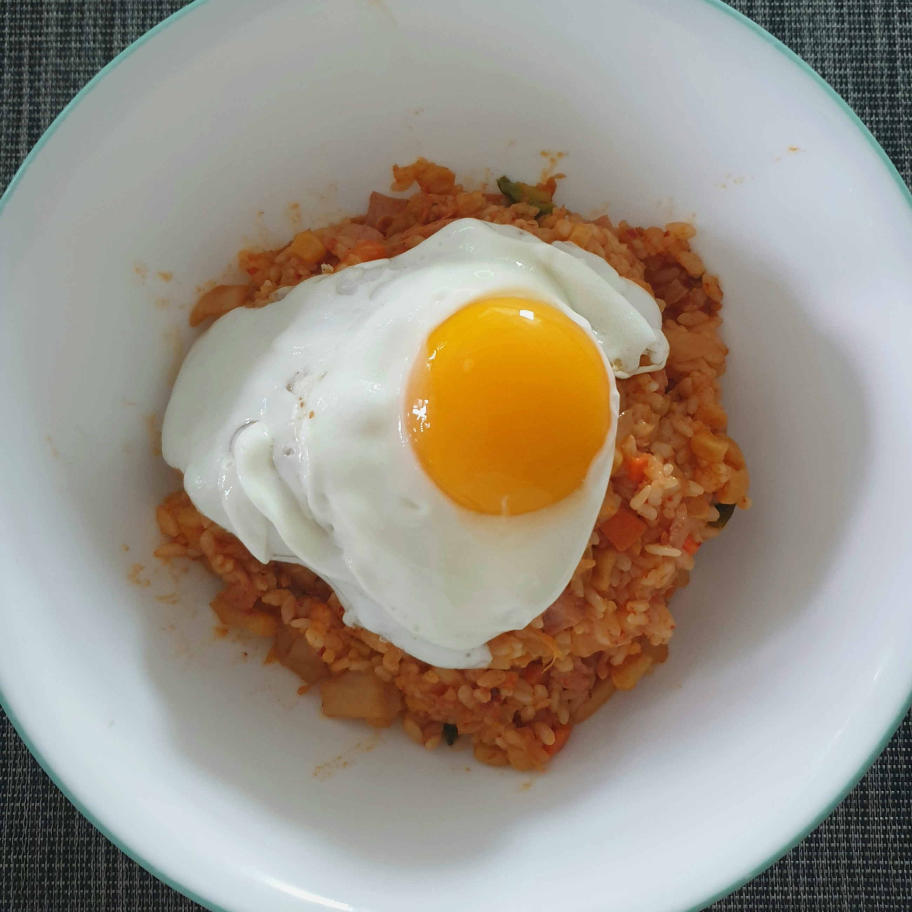

TR3Y
김치볶음밥
두부김치
김치볶음밥
재료
양파, 당근, 호박, 햄 1 웅쿰
버섯 1/2 개
김치 1 공기
밥 2 공기
기름 2 숫갈
과정
야채를 양파가 반투명해질 때까지 기름에 볶는다.
김치를 넣어 같이 볶는다.
김치가 반투명해지면 밥이랑 김치국물을 넣고 같이 볶는다.
계란후라이와 참기름을 추가하면 더 맛있다.
tip) 미지근한 밥을 이용하면 밥이 볶기 좋다. 
created by TR3Y